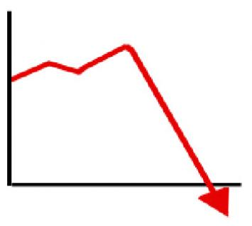

After many years of being on life support, Ruby has finally been pronounced dead at the age of 23. Ruby leaves behind it's younger siblings Elixir and Crystal. Of course, they'll be dead soon too, because no one can afford to be Elixir or Cyrtal programmers.
We contacted Ruby's creator "Matz" for comment, but he said "git gud nubz. i switched to python years ago. 420 braise it"
Ruby's decline can be traced back to one simple fact. Ruby sucks. We've compiled the below graphs to prove this fact: 
ruby is on the serious decline
- Rob Pike
execution speed alone is a good reason
- Mark Hamill
writing's on the wall for ruby
- Linus Torvalds
meh, the rest of the world agrees with me
- President Donald J Trump
I like polyphonic music from medieval times. Especially from the 1200's, with hocket. However, Gregorian chant has insufficient complexity to engage me.
- Richard Stallman